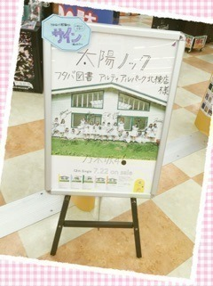
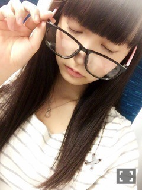

| 2015/09 08 Tue | ひめたん-0o0-その571 |

日曜の夜はらじらー！サンデー
前回は声優アーツに南條愛乃さん、
乃木坂から高山一実ちゃんが
登場しました！
選抜発表のお話とか
今後のこととか
真面目なことをいろいろと私の言葉で
お話しする時間を設けていただきました
ツアーが終わってから私の中で
消化したつもりだったのですが
言葉にするのは難しいものだなと思いながら
吃ってしまったり、考え込んでしまう
曖昧な空気まで伝わるのが
ラジオならではだったりするの......かな？
でも、何を言ってもフォローしてくれる
オリラジさんやスタッフの皆さんがいて
受け止めてくれるリスナーさんがいて
という安心感がありました( ´•̥ω•̥` )
振り返ってみると
何だかハートフルな時間でしたね
私にとってすごく大切な回になりました
いつか皆さんに恩返ししたい。

22時台はかずみんが来てくれました～
かずみんはやはり
バラエティー女王だった！
アメイジング、ポジピース、イイトコ～を
オリラジさんが早々に駆使してて
もう面白くてずっと笑ってた＼(^o^)／
かずみんありがとう♡♡
あ、番組の中でちらっとお話したけれど
私は夏休み実家に帰ってました♪
ツアーで広島に来た時に
無性に地元に帰りたくなって(´,,•ω•,,｀)
あとはひとりになりたくて。
リセットできました！広島イイトコー
それから神宮球場でカープの試合観たよ！
人生初の試合観戦でした～熱かった～
今度はマツダスタジアムでも観たいな。
弱ペダの映画も観たよ！！！

フタバ図書さんにも行きました
ありがとうございました～＊

広島までは新幹線派。
4時間なんて全然苦じゃないです
新大阪過ぎた辺りから
わくわくしてくるんだo(^▽^)o
NOGIBINGO!5見てくれたかな？
すみません、あの時の私は
あれが精一杯の声でした( ´ ･ω･ ` )
これから2週分ほど喋らないかと。笑
NOGIROOMでは愛未ちゃんに
お手紙を書きました♡
愛未ちゃんおねーちゃん♡

＊雑誌情報＊
17日 乃木坂46×週刊プレイボーイ2015
他にもいくつかあるから
情報解禁をお楽しみに。

 ライブの中で
ライブの中で
一番やってて達成感のあった曲を
一つ教えてください！
何でしょう。君僕かな。
日によってあったりなかったりだけど
アンコールのそんバカは
盛り上がりましたね～(´｡•ω•｡`)
めーるでもお話したんだけれど
「頑張らない」っていうのは
手を抜くとかいう意味ではなくて
もっとリラックスしてできたらいいなって
コメント読んでるとどうやら
勘違いさせてしまったみたいなので
ごめんね言葉が足らなくて。
私の頑固なところが
ダメだなって最近思うので
少しずつ壁を壊していけたらなと～＊
前回の日記にもたくさんのコメント
ありがとうございました、
びっくりしました！
久々の日記だね～コメントや
らじらーのリアルタイムな感想など
この一週間でたくさんたくさん
皆さんから元気を貰いました。
感謝の気持ちでいっぱい♡
今週末の握手会も楽しみです！
(＊´・ω・＊)
コメント(1000)
2015/09/08 23:30